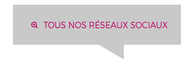
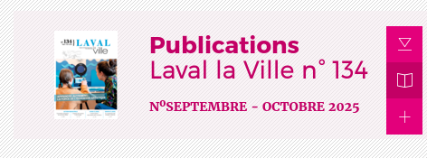
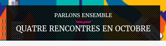
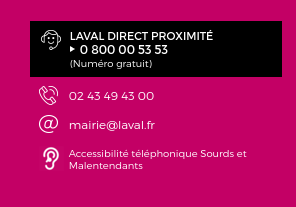

| Type | Element concerné | Localisation | Impact pour l'utilisateur | Solution proposée |
|---|---|---|---|---|
| Erreur | Image avec des liens sans texte alternatif | https://www.laval.fr/accueil | Si l'utilisateur ne peux pas charger l'image, il n'a aucun moyen de savoir de quoi il s'agit. | Ajouter un texte alternatif à chaque image (surtout quand celle-ci est un lien vers une autre page). |
| Erreur | Mauvais contraste |  | Le contenu peut être illisible ou incompréhensible pour l'utilisateur si les couleurs sont mal choisies. | Choisir des couleurs bien contrastées. On peut s'aider de sites qui proposent des palettes de couleurs prédéfinies pour le web (ex : radix colors). |
| Alerte | Texte alternatif répétitif | https://www.laval.fr/accueil | Si un utilisateur ne peut pas charger les images, il ne peut pas diférencier les images ou va croire qu'elles sont les mêmes. | Définir un texte alternatif précis et différent pour chaque image. |
| Alerte | Hiérarchie des titres mal définie |  | L'utilisation d'une hiérarchie facilite la navigation et la structuration de la page. Sans cela, l'utilisateur peut être plus facilement perdu. | Définir une structure claire de la page en utilisant une hiérarchie des titres. |
| Alerte | Liens similaires |  (Les deux textes renvoient vers la même url) |
L'utilisateur ne va pas savoir sur quel lien cliquer et peut croire que les liens dirigent vers des pages différentes. | Supprimer les liens inutiles et redondants. |
| Alerte | Texte trop petit |  | Un texte trop petit peut facilement devenir illisible, surtout sur des petites écrans. | Agrandir le texte pour qu'il soit lisible par tous. Eventuellement définir une taille de police minimale. |
Synthèse
L’audit d’accessibilité du site de Laval, réalisé avec l’outil WAVE, met en évidence plusieurs problèmes majeurs. Les principaux concernent l’absence de textes alternatifs sur certaines images, des contrastes de couleur insuffisants, une mauvaise hiérarchie des titres, la présence de liens similaires ou redondants, des textes alternatifs répétitifs et une taille de texte trop petite. Ces erreurs nuisent à la lisibilité et à la navigation, en particulier pour les personnes utilisant des lecteurs d’écran ou ayant des difficultés visuelles.
Les corrections prioritaires consistent à ajouter des textes alternatifs pertinents, améliorer les contrastes, structurer correctement la hiérarchie des titres, supprimer les doublons de liens et augmenter la taille minimale du texte.
Cependant, l’outil WAVE présente des limites, car il ne détecte pas tous les problèmes d’accessibilité, notamment ceux liés au sens du contenu ou aux éléments interactifs. Une vérification manuelle complémentaire reste donc nécessaire pour assurer une conformité totale avec le RGAA 4.1.
En résumé, une amélioration globale de la structure, de la lisibilité et de la cohérence du site permettrait d’offrir une expérience plus accessible et inclusive à tous les utilisateurs.